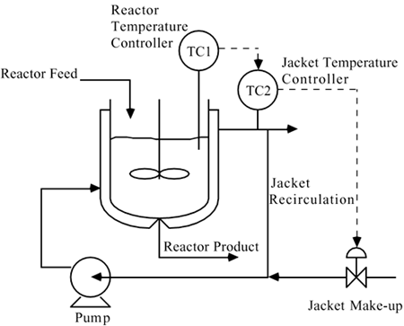
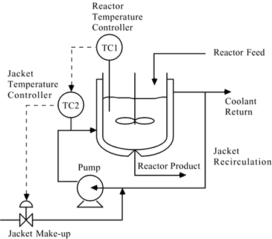

| [ Team LiB ] |
|
M8.1 BackgroundChemical reactors often have significant heat effects, so it is important to be able to add or remove heat from them. In a jacketed CSTR (continuous stirred-tank reactor) the heat is added or removed by virtue of the temperature difference between a jacket fluid and the reactor fluid. Often, the heat transfer fluid is pumped through agitation nozzles that circulate the fluid through the jacket at a high velocity; an example recirculating jacket system is shown in Figure M8-1. Notice that cascade control is shown, with a primary controller (reactor temperature) and a secondary controller (jacket temperature). The output of the reactor temperature controller is the jacket temperature setpoint. The output of the jacket temperature controller is the valve position for the jacket make-up valve (usually it is assumed that this is directly related to the flowrate of the jacket make-up fluid). The coolant can be chilled water, but is often a heat transfer fluid, such as an ethylene glycol/water mixture or a proprietary mixture of hydrocarbons. Figure M8-1. Cascade control, with jacket outlet temperature as the secondary control variable. A different cascade control strategy is shown in Figure M8-2. In this cascade control stategy, the output of the reactor temperature controller is the setpoint for jacket inlet temperature. The output of the jacket inlet temperature controller is the valve position of the coolant make-up valve. The first cascade control strategy (Figure M8-1) is the most commonly used reactor temperature control strategy. Figure M8-2. Cascade control, with jacket inlet temperature as the secondary control variable. |
| [ Team LiB ] |
|